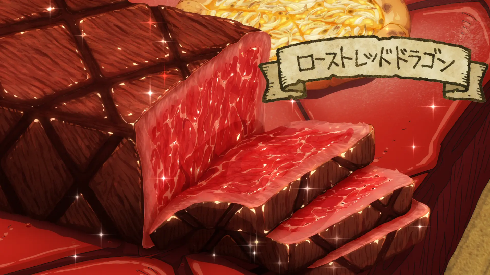

Roasted Red Dragon

This recipe cleverly uses the undying fire and steel-like skin of the Red Dragon. Dragon meat is tough, but this recipe brings out its unmatched flavor.
Ingredients
- A block of Red Dragon meat.....1 kg
- Wine.....50 ml
- Salt & Pepper.....pinch
Directions
- Prepare a piece of Dragon skin with the scales still attached.
- Heat up the scales by placing it in the undying fire of the Dragon.
- Once the scales are sizzling hot, take the block of Dragon meat and sear all of the edges until golden.
- While searing, mix together the wine, salt & pepper in a pot and bring to a simmer.
- Once the sides of the meat are nice and seared, place the block into the pot with the sauce. Make sure that the whole block is covered in the sauce.
- Take the pot off of the heat and let the meat marinate for 30 min.
- Once marinated, slice the block of meat into thin slices and serve.
- Enjoy!